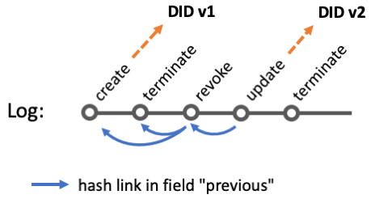
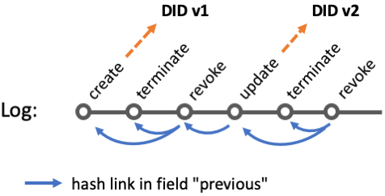
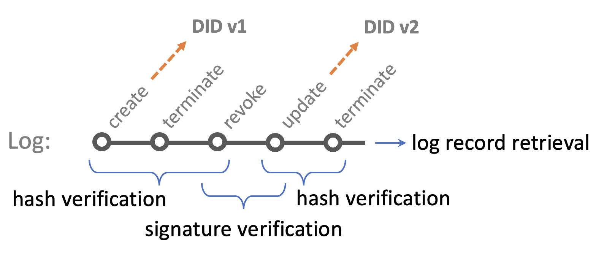

This specification is published by OwnYourData as the defining document for the did:oyd DID method. It is not a W3C Standard, is not on the W3C Standards Track, and is not a work item of the W3C Credentials Community Group or any other W3C group. The did:oyd method is registered in the W3C Decentralized Identifier Extensions registry; registration is a purely informative listing and does not imply review or endorsement by W3C. GitHub Issues are preferred for discussion of this specification.
History
-
Version 0.3: 19 October 2021 (initial public release, link)
-
Version 0.4: 19 January 2022 (link)
-
Version 0.5: 30 May 2023
-
Version 0.6: 25 August 2026 (current version)
1. Introduction
Decentralized Identifiers (DIDs) [DID-CORE] are a new type of identifier for verifiable, decentralized digital identity. These new identifiers are designed to enable the controller of a DID to prove control over it and to be implemented independently of any centralized registry, identity provider, or certificate authority. These sorts of identifiers often utilize a heavy-weight registry, such as ones utilizing Decentralized Ledger Technologies (DLT), to create, read, update, and deactivate DIDs.
While DLT-based DID Methods have great decentralization characteristics, and some of the more centralized DID Methods provide strong system control guarantees, the general approaches tend to be expensive to set up and operate. OYDID takes the approach to not maintain DID and DID Document on a public ledger but on one or more local storages (that might be publicly available). Through cryptographically linking the DID Identifier to the DID Document, and furthermore linking the DID Document to a chained provenance trail the same security and validation properties as a traditional DID can be maintained while avoiding highly redundant storage and also works in settings without general public access.
The rest of this document outlines the syntax for the did:oyd method, the operations it supports, and some security and privacy considerations as well as ehtical aspects that implementers might want to be aware of when using this DID method.
2. The did:oyd Format
The format for the did:oyd method conforms to the DID core specification [DID-CORE] as outlined by W3C. It consists of the did:oyd prefix, followed by a Multibase [MULTIBASE] (default: base58-btc) encoded value that is a Multihash [MULTIHASH] (default: sha2-256) value of composed of information from the payload, keys, and log. The digest algorithms an implementation has to recognise, and the codes identifying them, are listed in § 4.2.1 Digest Algorithms.
The detailed calculation of the DID identifier from the internal document and log information via ABNF is described here:
; !syntax("abnf") did-oyd-format = "did:oyd:" identifier identifier = MULTIBASE ( base-identifier did-information-hash ) did-information-hash = MULTIHASH ( hash-identifier did-canonical-information ) did-canonical-information = <create JSON canonical representation according to RFC 8785 from did-information >did-information = "{doc:" payload ",key:" key-value ",log:" log-value "}" payload = <json-grammar-rules >key-value = public-doc-key-encoded ":" public-revocation-key-encoded log-value = termination-hash-encoded public-doc-key-encoded = MULTIBASE ( base-identifier public-doc-key-codec ) public-doc-key-codec = MULTICODEC ( codec-identifier public-doc-key ) public-doc-key = <public key from key pair used for verifying payload >public-revocation-key-encoded = MULTIBASE ( base-identifier public-revocation-key-codec ) public-revocation-key-codec = MULTICODEC ( codec-identifier public-revocation-key ) public-revocation-key = <public key from key pair used for verifying revocations >termination-hash-encoded = MULTIBASE ( base-identifier termination-log-entry-hash ) termination-log-entry-hash = MULTIHASH ( hash-identifier termination-canonical-log-entry ) termination-canonical-log-entry = <create JSON canonical representation according to RFC 8785 from termination-log-entry >termination-log-entry = "{op:" DIGIT ",ts:" DIGIT ",doc:" revoke-encoded ",sig:" sig-revoke-encoded ",previous: []}" revoke-encoded = MULTIBASE ( base-identifier revoke-hash ) revoke-hash = MULTIHASH ( hash-identifier sub-revocation-canonical-log-entry ) sub-revocation-canonical-log-entry = <create JSON canonical representation according to RFC 8785 from sub-revocation-log-entry >sub-revocation-log-entry = "{op:" DIGIT ", ts:" DIGIT ", doc:" sub-doc-encoded ", sig:" sig-sub-doc-encoded "}" sig-revoke-encoded = MULTIBASE ( base-identifier sig-revoke ) sig-revoke = <signed revoke-encoded with private key corresponding to public-revocation-key in payload >sub-doc-encoded = MULTIBASE ( base-identifier sub-doc-hash ) sub-doc-hash = MULTIHASH ( hash-identifier sub-doc-canonical ) sub-doc-canonical = <create JSON canonical representation according to RFC 8785 from sub-doc >sub-doc = "{doc:" payload ",key:" key-value "}" sig-sub-doc-encoded = MULTIBASE ( base-identifier sig-sub-doc ) sig-sub-doc = <sign sub-doc-encoded with private key corresponding to public-doc-key in payload >base-identifier = DEFAULT base58btc hash-identifier = DEFAULT sha2-256 codec-identifier = DEFAULT ed25519-pub
3. DID Operations
The following section outlines the DID operations for the did:oyd method.
3.1. Create (Register)
Creating a did:oyd identifier requires
-
a payload (e.g., service endpoints) as JSON document and
-
two cryptographic key pairs (default: ED25519)
in the format described in Section § 2 The did:oyd Format.
The DID document and associated log entries are stored in a registry accessible by relevant stakeholders. An example is given below (EXAMPLE 1) listing a payload, internal and W3C conform DID document, log entries, private keys, and private revocation document.
-
DID
-
Payload
-
Internal DID document
-
W3C conform DID document
-
Log entries
-
Private doc key
-
Private revocation key
-
Private revocation document
DID: did:oyd:zQmNXp9zTLQECaLwWcXy4ctdKctnPLghHWftwdJsfGd8Erz
Payload:
{
"foo": "bar"
}
Internal DID document:
{
"doc": {
"foo": "bar"
},
"key": "z6MusWcRn7TWW3XAa96vrST5Fx8n3xndSEVEfMCQBDAMrQpP:z6Mv1rQ3ZTsLwfV8neZ1zKp17NHeb1Xv3KK5EB4D8t5mxJ3V",
"log": "zQmSkagv16yPWiLAsUXRX5RKmejXuHTMTNodZewXpFCFYvj"
}
W3C conform DID document:
{
"@context": "https://www.w3.org/ns/did/v1",
"id": "did:oyd:zQmNXp9zTLQECaLwWcXy4ctdKctnPLghHWftwdJsfGd8Erz",
"verificationMethod": [
{
"id": "did:oyd:zQmNXp9zTLQECaLwWcXy4ctdKctnPLghHWftwdJsfGd8Erz",
"type": "Ed25519VerificationKey2020",
"controller": "did:oyd:zQmNXp9zTLQECaLwWcXy4ctdKctnPLghHWftwdJsfGd8Erz",
"publicKeyBase58": "z6MusWcRn7TWW3XAa96vrST5Fx8n3xndSEVEfMCQBDAMrQpP"
}
],
"keyAgreement": [
{
"id": "did:oyd:zQmNXp9zTLQECaLwWcXy4ctdKctnPLghHWftwdJsfGd8Erz",
"type": "Ed25519VerificationKey2020",
"controller": "did:oyd:zQmNXp9zTLQECaLwWcXy4ctdKctnPLghHWftwdJsfGd8Erz",
"publicKeyBase58": "z6Mv1rQ3ZTsLwfV8neZ1zKp17NHeb1Xv3KK5EB4D8t5mxJ3V"
}
],
"service": [
{
"id":"did:oyd:zQmNXp9zTLQECaLwWcXy4ctdKctnPLghHWftwdJsfGd8Erz#payload",
"type": "Custom",
"serviceEndpoint": "https://oydid.ownyourdata.eu",
"payload": {
"foo": "bar"
}
}
]
}
Log entries:
[
{
"ts": 1641122585,
"op": 2,
"doc": "zQmNXp9zTLQECaLwWcXy4ctdKctnPLghHWftwdJsfGd8Erz",
"sig": "z2BQRPP8e26kFRXoQxBB2ERFZgFVu1Eov7VdTjt9diSipRxWnx8rm4knHMsdERteE7Ry66GkVmp9Ghnp9d5cigA26",
"previous": []
},
{
"ts": 1641122585,
"op": 0,
"doc": "zQmeugQwCyHSdSQPbPBYmMV4qhitnJ6m4ZHTvH4GJZN3SRh",
"sig": "zYo8FztfFvRpctfifYjgL4uswEMWagRELDqBpwMvMjLBR5dfsL4WzZc3hmG4HVKp6dhmVy4dGbfGot5kYLV2LgD9",
"previous": []
}
]
Private doc key: z1S5YqYg92n7q9g581jNsiMs7mwLzPtZ6tzBZTGNCwxxj2Hf
Private revocation key: z1S5WvZDDNAGQEnjSET1NA7MuMdVGZ12ZW2SqED5dxcLbLt8
Private revocation document:
{
"ts": 1641122585,
"op": 1,
"doc": "zQmQ8pDd2gkWAu5tNpm9JtMBpPZ9eYSwKycobTVVszjdoMc",
"sig": "z5ZbPS243WSimHJzVigJ9Bb3AKn6DtHTXHaAc13X7uUVFpbhgmCSp8v9vZXScj9zJP4sdouip6KckSM3P26Nw3p2"
}
3.1.1. Control Keys and Content Keys
The key member of the internal DID document is the control field of a did:oyd. It carries exactly two values, separated by a colon:
-
position 0 — the public document key: the key authorising an update, and the key against which the signature of the creation entry (
op2) is verified; -
position 1 — the public revocation key: the key against which the signature of the revocation entry (
op1) is verified.
No further positions are defined. An implementation reading this field MUST address the two values by position, and MUST NOT take the last colon-separated value as the revocation key. A reader written that way returns the wrong key without any error should the field ever be extended, and the document it produces fails only at revocation time — years after the mistake was made.
Keys that do not control the log are content rather than control, and belong in the payload as verification methods; key agreement above all. The payload enters the identifier hash exactly as the key member does, so a key placed there carries the same integrity guarantee, can be rotated by an ordinary update, and leaves the two positions above untouched.
Note: an implementation MAY derive a key agreement key from the private document key instead of holding one of its own, because an Ed25519 key converts to X25519. Key types that do not permit that conversion — post-quantum signature schemes in particular — require a separate key agreement key in the payload.
3.2. Read (Resolve)
Reading a did:oyd is a matter of searching for a DID document that either can be directly linked (through hashing and encoding) to the provided identifier or through traversing through the log to unambiguously link the provided identifier to the latest version of the DID document. Cryptographic proof for the link between DID Identifier and DID Document, ownership, and completeness is performed in the following steps (here the example for a newly created DID without any updates so far):
-
the identifier is the encoded hash value of the internal DID document (the hashing algorithm is encoded in the identifier using MULTIHASH, default:
SHA2-256, the encoding algorithm is also encoded in the identifier using MULTIBASE, default:base58-btc) -
the DID document includes public keys (encoded with MULTIBASE, default:
base58-btcand specified with MULTICODECS, default:ed25519-pub) and the hash value of a DID log entry (the hashing algorithm is encoded in the identifier using MULTIHASH, default:SHA2-256, the encoding algorithm is also encoded in the identifier using MULTIBASE, default:base58-btc) -
the log entry (create, op=2) for the DID document provides a signature ("sig" - encoded with MULTIBASE, default:
base58-btc) of the identifier ("doc") to prove possession of the private key, i.e., use the public payload key in the DID document to verify this signature -
the other log entry (terminate, op=0) provides revocation info; in case a log entry with the stated hash in doc exists the DID resolving process must continue
An example is given below (EXAMPLE 2) depicting the log entries to be evaluated for linking an old DID identifier (DID v1) to the content of DID v2.

Figure 1: Visualization of log entries
Process:
-
User wants to resolves DID v1 and queries an OYDID registry with identifier
-
OYDID registry responds with (outdated) DID document for DID v1 and log entries "create" and "terminate" (shown on the very left in the picture above)
-
Resolver (automatically) queries the OYDID registry for a revocation log entry with the hash stored in the terminate entry
-
OYDID repository returns revoke entry
-
Resolver (automatically) queries the OYDID registry for log entries that hold the hash value of the revoke entry
-
OYDID repository must retrieve exactly one update entry (and associated terminate entry) plus associated DID document (DID v2) as linked by the update entry
-
Resolver validates linked hash entries and queries again OYDID registry for a revocation log entry from the second terminate entry (shown on the very right in the picture above)
-
OYDID repository finds no information of such a revocation entry and therefore the resolver can return DID v2 as the latest document
Note: it is in the interest of the owner to publish revocation entries and make those easily accessible to ensure that even outdated DID identifier resolve to the latest DID document
Note: see section § 4.2 Verification Steps for a detailed description of using the OYDID command line tool to output step-wise verification information for independent proof.
3.2.1. Resolution Result
A resolver answers either with the DID document alone or with a DID Resolution Result — the
document accompanied by didResolutionMetadata and didDocumentMetadata as defined in
[DID-RESOLUTION]. Which of the two is returned is negotiated over the Accept header, see
§ 3.2.5 HTTP(S) Binding.
The id of the returned document is the identifier that was requested, not necessarily
the one the log resolves to. Every update mints a new identifier, so an identifier printed on
a product, embedded in a credential or handed to a business partner is regularly an earlier
version of the DID the document now belongs to. Answering with the requested identifier keeps
that reference intact — and it is what [DID-CORE] requires: the value of id in the
retrieved document always matches the DID that was resolved. How that identifier relates to
the other versions is stated in didDocumentMetadata:
-
canonicalIdnames the identifier of the current version. -
equivalentIdlists every other identifier the same document resolves through, that is all versions except the one carried inid. When an earlier version was requested, the canonical identifier therefore appears in both fields. The property is omitted while a DID has only one version; it is never sent as an empty set. -
createdis the timestamp of the CREATE entry,updatedthat of the UPDATE entry which produced the version that was resolved.updatedis omitted while a DID has never been updated. -
versionIdis the document hash of the resolved version, without thedid:oyd:prefix and without a location, so thatdid:oyd:+versionIdis that version’s DID. -
deactivatedistruewhen the DID has been revoked, see § 3.2.3 Deactivation.
Beyond these, didDocumentMetadata carries method-specific properties — log, log_hash,
registry, document_log_id and termination_log_id — that expose the record a resolver
based its answer on. Consumers MUST NOT treat an unknown property in this structure as an
error.
Note: versionId names a version but cannot be used to retrieve that version’s document.
Resolving did:oyd: + versionId returns the current document with id set to the
identifier that was asked for, because resolution always follows the log to its end. The
historical document remains retrievable through the log, whose entries name each version by
hash. This method defines no DID URL query parameters (see § 3.2.5 HTTP(S) Binding), so ?versionId=
is not accepted; a future version of this specification may define it.
{
"didDocument": {
"id": "did:oyd:zQmaBZTghndXTgxNwfbdpVLWdFf6faYE4oeuN2zzXdQt1kh",
"alsoKnownAs": ["did:oyd:zQmNauTUUdkpi5TcrTZ2524SKM8dJAzuuw4xfW13iHrtY1W"],
...
},
"didResolutionMetadata": { "contentType": "application/did" },
"didDocumentMetadata": {
"canonicalId": "did:oyd:zQmNauTUUdkpi5TcrTZ2524SKM8dJAzuuw4xfW13iHrtY1W",
"equivalentId": ["did:oyd:zQmNauTUUdkpi5TcrTZ2524SKM8dJAzuuw4xfW13iHrtY1W"],
"versionId": "zQmNauTUUdkpi5TcrTZ2524SKM8dJAzuuw4xfW13iHrtY1W",
"created": "2022-01-03T15:49:00Z",
"updated": "2022-01-03T15:50:32Z",
...
}
}
3.2.2. Equivalence
[DID-CORE] requires the DID method — not the resolver — to guarantee that every
equivalentId value and the canonicalId value are logically equivalent to the id of the
document they accompany. For did:oyd that guarantee follows from the log, and this section
states the argument rather than leaving it implicit in an implementation.
A did:oyd identifier is the hash over its own DID document. An update publishes a new
document, mints the identifier of that document, and records an UPDATE entry that references
the TERMINATE entry of the document being replaced; the entry is signed with the document key
of that earlier version. Resolution starts at the requested identifier and follows this chain
of references to its end. Two identifiers therefore appear in one resolution result exactly
when a chain of signed entries connects them, and every such chain ends in the same current
document. Equivalence is not asserted by whoever wrote the document — it is recomputed by
every resolver from records that cannot be altered without invalidating a hash or a signature.
Because the guarantee rests on the chain, both properties are also complete in the
direction they claim: equivalentId lists all other versions reachable through the log, not
merely the neighbouring one.
canonicalId is not a durable key. In did:oyd the identifier is the hash
over the document, so the canonical identifier changes with every update. [DID-CORE] permits
this — the property is defined "in the scope of the containing DID document" — but a consumer
that stores canonicalId as its primary reference will find that reference stale after the
next update, and will not be notified. The identifier that stays valid is the one the consumer
already holds and asked with: it keeps resolving, keeps being returned as id, and its
relation to the current version is restated on every resolution. Store that one, and read
canonicalId as the answer to "which version is current right now".
Note: a canonicalId equal to id is not an omission. It states that the identifier which
was asked for is itself the current version. [DID-CORE] permits the two to be equal, and
leaving the property out in that case would be indistinguishable from a method that does not
support it at all.
3.2.2.1. Location is not Identity
A did:oyd MAY carry a location suffix (see § 3.2 Read (Resolve)) naming the repository that holds the
document. The suffix is a resolution hint, not part of the identity: the same document can be
mirrored at any number of repositories, and the set of location-bound forms of one DID is
therefore open and cannot be enumerated. canonicalId and equivalentId consequently name
identifiers without a location, and equivalentId never attempts to list mirrors.
id is the exception, because it echoes what was requested: a client that resolved a
location-bound form receives it back unchanged, and the location-free form of that same
version then appears in equivalentId.
Where a location appears inside an identifier it MUST be percent-encoded: [DID-CORE] admits
only ALPHA, DIGIT, ., -, _ and percent-encoded octets in a method-specific
identifier, so did:oyd:<hash>@<location> is not a conforming DID and only
did:oyd:<hash>%40<location> is.
3.2.2.2. alsoKnownAs
The document itself lists other identifiers in alsoKnownAs. That property is informative:
[DID-CORE] states that identifiers linked through alsoKnownAs are not to be considered
equivalent without an inverse relationship, which a did:oyd version chain cannot express —all versions resolve to the same document. Implementations MUST rely on canonicalId and
equivalentId when they need to decide equivalence.
alsoKnownAs carries two kinds of statement, and an entry does not say which of the two
it is: the other versions of the DID, and the location-bound form of a version. It MUST NOT be
read as a list of repositories.
3.2.3. Deactivation
A revoked DID MUST NOT be served as if it were current: answering with the last document the DID carried before its revocation is not permitted — the revocation record is published precisely so that consumers stop trusting that document.
A revoked DID is not, however, an unknown one, and the two MUST stay distinguishable. Where a
resolver answers with a DID Resolution Result it therefore reports the revocation as
[DID-CORE] defines it: HTTP status 200, didDocument null, and didDocumentMetadata
containing deactivated with the value true. didResolutionMetadata carries no error in
this case — an error states that the identifier could not be resolved, which is reserved for
identifiers that were never registered.
Where a resolver answers with the bare DID document it reports the revocation with HTTP status
410 Gone; a deployment MAY report 404 Not Found instead where an intermediary treats 410
in a way that loses the distinction. Both bindings are needed: 410 is the correct statement
towards a client that asked for a document, while a consumer behind a resolver driver never
sees the HTTP status at all and can learn of the revocation only from deactivated.
3.2.4. Public Key Identifier
Inspired by EBSI DID v2 it is now also possible for the did:oyd method to use the document public key as identifier.
-
with cryptographic hash value:
did:oyd:zQmNXp9zTLQECaLwWcXy4ctdKctnPLghHWftwdJsfGd8Erz -
with public key identifier:
did:oyd:z6MusWcRn7TWW3XAa96vrST5Fx8n3xndSEVEfMCQBDAMrQpP
Because the public key does not change when a DID is updated without key rotation, one key can be carried by more than one stored version. A repository resolving this form MUST answer with the newest version that has not been revoked. For the intended case — one DID plus its update history — that is exactly the current document: key rotation on update is optional, so a non-rotating update leaves the earlier, now revoked version next to the new one. When every version carrying the key has been revoked, the newest one is returned nonetheless, so that the caller learns about the revocation instead of receiving "not found".
To keep that answer meaningful, a repository MUST reject a create whose document key is
already carried by an active DID, with HTTP status 400 Bad Request. Reusing a key after the
DID it controlled has been revoked stays permitted, and an update is not affected — a
non-rotating update legitimately carries the key of the version it replaces.
Note: the public key identifier is resolved by the repository holding the DID and is not a global lookup. A repository can only answer for keys it has recorded; the same key published in another repository is not found through it.
3.2.5. HTTP(S) Binding
[DID-RESOLUTION] addresses a resolver through a base URL to which the DID is appended; the path of that URL is not prescribed. Implementations of this method offer the following endpoints, each taking the DID as the last path segment:
| path | function | answer |
|---|---|---|
/1.0/identifiers/
| resolve | always a DID Resolution Result |
/1.0/resolve/
| resolve | negotiated, Resolution Result by default |
/1.0/resolveRepresentation/
| resolve | negotiated, DID document by default |
/1.0/dereference/
| dereference a DID URL | dereferencing result |
/1.0/identifiers/ answers with a Resolution Result regardless of the Accept header,
because that is the shape the Universal Resolver expects from a driver. On the other
endpoints the header decides:
-
application/did-resolution, or the earlier formapplication/ld+json;profile="https://w3id.org/did-resolution", requests a DID Resolution Result. -
application/didrequests the DID document on its own. -
application/did-url-dereferencingrequests a dereferencing result.
A response whose shape depends on the Accept header MUST carry Vary: Accept; without it a
cache may hand one form to a client that asked for the other. Status codes follow
[DID-RESOLUTION]: 200 on success, 404 when the DID is unknown, 410 when it has been
revoked (see § 3.2.1 Resolution Result), and 501 for a DID URL this method does not define —did:oyd has neither path nor query parameters, and reporting them as unsupported is
preferable to ignoring them silently.
Resolvers are expected to be reachable from browser-based clients and SHOULD therefore permit cross-origin requests.
https://resolver.ownyourdata.eu/1.0/resolve/did:oyd:zQmaBZTghndXTgxNwfbdpVLWdFf6faYE4oeuN2zzXdQt1kh
3.2.6. did:web Bridge
A repository publishes every DID it holds a second time as a did:web identifier
[DID-WEB], so that clients which support did:web but not did:oyd can read the document
at all. A DID stored as did:oyd:<hash> in a repository reachable under <host> is served
at https://<host>/<hash>/did.json, which is where a did:web resolver looks for
did:web:<host>:<hash>.
The document returned there is the same document, with every occurrence of did:oyd:
replaced by did:web:<host>: — the identifier, the controller, the identifiers of the
verification methods and the entries in alsoKnownAs. Only the document is returned, not a
Resolution Result.
https://oydid.ownyourdata.eu/zQmaBZTghndXTgxNwfbdpVLWdFf6faYE4oeuN2zzXdQt1kh/did.json
answers with:
{
"id": "did:web:oydid.ownyourdata.eu:zQmaBZTghndXTgxNwfbdpVLWdFf6faYE4oeuN2zzXdQt1kh",
"verificationMethod": [{
"id": "did:web:oydid.ownyourdata.eu:zQmaBZTghndXTgxNwfbdpVLWdFf6faYE4oeuN2zzXdQt1kh#key-doc",
"controller": "did:web:oydid.ownyourdata.eu:zQmaBZTghndXTgxNwfbdpVLWdFf6faYE4oeuN2zzXdQt1kh",
...
}],
...
}
What the bridge cannot carry over is the property this method exists for: under did:web the
identifier is a host name and a path, and it no longer commits to the content of the
document. Whoever controls the host can serve a different document, and no log, hash chain or
signature contradicts them. Trust rests on the host, not on the identifier. Consumers able to
resolve did:oyd SHOULD do so, and SHOULD treat the did:web form as a fallback for
interoperability.
The rules of § 3.2.1 Resolution Result apply on this path as well. In particular a revoked DID MUST NOT be served through the bridge as if it were current — a resolution path that skips the revocation check would otherwise reinstate exactly the document the revocation withdrew.
3.3. Update
Updating in did:oyd is providing a new DID document and/or new keys for key rotation while also publishing the revocation document and signing with original keys to prove ownership. An example is given below (EXAMPLE 3) of all log entries for an updated DID.
[{
"ts": 1633300869,
"op": 2,
"doc": "zQmdxfGRfFEnLoJ9RTiyzG9TPBhK7q6zsqrGFVzuxVPv4dq",
"sig": "ziY1pSb9irVMykHotX1UDsNXP8V6iF4REVqfk2trQP9rtooAKcMkXHgjz8VTC3FEDTjKk6D2Z3ywLer1i9NKaLo4",
"previous": []
}, {
"ts": 1633300869,
"op": 0,
"doc": "zQmVnLPgFYYNf4GEzzD3gLbSR4xhpdk7dU4BWQR4pJr7R4Z",
"sig": "z2gJqK2bGP5VfZdCVijBeuUtzxiNaZm4NNMH6zm4EVG2LD4rqZg62c5craaQwEPEjxSbgjH4kE79DPwddghiNjirk",
"previous": []
}, {
"ts": 1633300869,
"op": 1,
"doc": "zQmVYqZoGSncYGybUnZi514niKgju68B6AVp7KJAdVifsYU",
"sig": "z461mfYfCvLvkeeN9vdd1yNoqFBpKAwFHD1xLRQUb4evBwEXCJLZXT9qcfQo54VTrr3eow3mJHZ3aGa7inuP29ZXg",
"previous": ["zQmVDzKVeyj4k8RYWHtKdML6MXUZX8Lu4LiiS46SfhQkZfG",
"zQmSjHywvbeHV1JzsLwexzXS9246vzHkyBUkwSbXDH5f1gg"]
}, {
"ts": 1633300910,
"op": 3,
"doc": "zQmNUV1MJ5xKkFm6Lc9EKqAauGzbKP7amvbyxsx79mKwqPB",
"sig": "z2UMg3AhegwzuMgrJ1bTRDyu9W9Kp8G7ERZi2Kin3JG8UhwJqf1yivNEYY5JvB9aPDfH8GEEw9Mbvscqhk1LJH8cp",
"previous": ["zQmetSQY5UZd91ubdWyQTh2gqVuKwkUVtjamh33p7spaYVR"]
}, {
"ts": 1633300910,
"op": 0,
"doc": "zQmQTdAmqxuQQB2yBj4qZoS4ooNUnL7PzwUydEepDqjJHd4",
"sig": "z5Bh8VwnUUQzFruVJosySBDfJJy5CRADbpYHjNH2qFjcCx71J6QJxttVhfnh7ZgfZpir9ghsNk24g3vRrDkvhR3jZ",
"previous": []
}]
3.4. Deactivate
Deactivating an OYDID is simply done by publishing the private revocation entry without providing any update record. The figure below depicts the log representing a deactivated DID.
How a resolver reports a deactivated DID — deactivated in the metadata, 410 Gone on the
bare document — is described in § 3.2.3 Deactivation.

Figure 3: Visualization of log graph for a deactivated DID
3.5. Client-Managed Secret Mode
In the operations described so far the party performing them holds the private keys. That is not always possible: a key generated inside a hardware secure element cannot be exported, and an element typically offers no more than three operations — create a key pair under a name, return its public key, and sign a payload with it.
The Client-Managed Secret Mode (CMSM) covers that case. The client contributes public keys and signatures; no private key ever reaches the repository, and none is generated there.
A client that can compute a canonical JSON serialisation and the digests of Section § 4.2.2 Hash value calculation does not need CMSM — it builds the log entries itself and publishes them, and its keys stay local anyway. CMSM addresses the other case: a client that can only sign and call an endpoint. Because such a client cannot compute the hashes, the repository computes them, which means the values to be signed can only be handed out one at a time.
3.5.1. Ordering of Signatures
The order is not a matter of protocol design; it follows from the data. Each value that has to be signed is the hash of a structure that already contains the previous signature:
subDidHash = hash({doc, key}) signed with the revocation key -> r1
l2_doc = hash(r1) signed with the document key -> l2
l1_doc = hash({doc, key, log}) signed with the document key -> l1
The termination entry l2 cannot be built before the revocation entry r1 is signed, and the DID document is not complete — and therefore l1_doc not known — before l2 is signed. On an update the last signature is made with the document key of the DID being replaced, since that is what authorises the transition.
This yields three signatures for a create and three for an update, each collected in its own exchange.
3.5.2. Flow
A flow is identified by a session handle. Each incomplete step is answered with the value to be signed and the key to sign it with:
{ "cmsm" : true , "session" : str in g, "phase" : int , "pk" : str in g (mult ibase), "sign" : str in g (hash), "with" : "key-rev" |"key-doc" |"key-doc-old" }
with names a key, not a slot in a particular product; a client maps it onto whatever names its secure element uses. Every following request carries the session and one signature, nothing else. Implementations should expire an unfinished session and MUST discard it once the flow completes — until then it holds material that authorises operations on the DID being built.
If the client contributes only a document key, the revocation key is generated by the repository. The DID is then created without the repository ever seeing the document key, but the revocation secret is not client-managed, and the party holding it can revoke the DID. A client that intends to keep sole control contributes both keys.
3.5.3. Retaining the Revocation Entry
The revocation entry r1 of a document is signed when the document is created, and its hash is fixed in the termination entry. Revoking the document later means publishing exactly that entry.
A signer that produces deterministic signatures — as specified in [RFC6979] for ECDSA, and inherent to Ed25519 — can reproduce it at any time from the revocation key. A signer that draws a random nonce cannot: a fresh signature yields a different entry, whose hash no longer matches what the termination entry committed, and the revocation is rejected. Secure elements commonly fall into the latter group.
A client in this mode therefore has to retain the revocation entry it received. It is not a secret — it is published on revocation — but without it the DID can be neither updated nor revoked. Implementations MUST return it to the client when a create or update completes.
3.5.4. Verifying a Supplied Revocation Entry
Where the private revocation key is not available — revoking a document during an update, and a client-managed deactivation — the client supplies the entry instead of the repository rebuilding it. Three conditions have to hold, and an implementation MUST check all of them:
-
the
docvalue equals the hash of the current document of that DID, -
the signature verifies against the revocation key named in that document, and
-
the hash of the entry equals the value committed in the corresponding termination entry.
The third condition is the binding one. The first two are satisfied by any entry belonging to that document; only the third ties the entry to the document as it was actually published, so an entry taken from a different DID, or a re-signed one, does not pass.
3.5.5. Signatures on Creation Entries
Before this mode gained a separate exchange for it, the creation entry of a CMSM DID carried no signature, and implementations accepted such entries. Resolvers SHOULD verify the signature of a creation entry and MAY reject entries without one; they should be aware that DIDs created by earlier implementations may not carry it, and that the signature cannot be added afterwards without the private document key.
The omission is less consequential than it appears — the DID is the hash of a document that contains the document key, so an unsigned creation entry cannot introduce a different document — but the guarantee an update entry gives, namely that the previous controller authorised the change, has no counterpart at creation time without it.
4. DID Log
The log is a directed acyclic graph (DAG) and represents the life cycle of a DID. Each element in this graph holds the following attributes:
{ "ts" : int , "op" : int , "doc" : str in g (hash), "sig" : str in g (signature of hash), "previous" : [ array of str in gs (hashes)] }
4.1. Log Operations
The following list describes all available log operations (op) and specific use of attributes:
-
Terminate (
op=0): confirms last entry until revoke entry is published
doc: hash of revoke entry
sig: doc signed by private document key
previous: can reference Clone or Delegate log entries for confirmation -
Revoke (
op=1): invalidates a Terminate log entry; only published for new information
doc: hash of doc and key in DID Document
sig: doc signed by private revocation key
previous: can reference "Create" or "Update" and always "Terminate" -
Create (
op=2): start new DID
doc: hash of DID Document
sig: doc signed by private document key
previous: has only a reference when created using clone pointing to this clone entry -
Update (
op=3): update DID
doc: hash of DID Document
sig: doc signed by private document key from previous version DID version
previous: reference previous revoke log entry -
Clone (
op=4): create linked DID with same "doc" but new keys and logs
doc: hash of new DID Document (same payload but different keys and logs)
sig: doc signed by the new private document key
previous: reference Create or Update log entry
4.2. Verification Steps
Processing the log provides unambiguous evidence for authenticity, correctness, and timeliness of resolving a DID to the DID document. This section describes all operations to perform independent verification when resolving a DID.

Figure 4: Types of verification
Resolving a DID requires 3 different types of verifications as depicted in Figure 4:
-
Hash Verifiction: within a DID version (e.g., DID v1 or DID v2 in the figure above) all associated log entries and the identifier are linked through hash values for a given JSON object
-
Signature Verification: between 2 DID versions authenticity is proven throuogh signing the new log entry with the private key from the previous version (the update log record in the figure above is signed with the primary key from DIV v1)
-
Log Record Retrieval: hash and signature verification in an untrusted repository guarantee imutability and it is up to the DID owner to ensure that DID documents and log records are publicly available
The following sub-sections describes those verification methods in detail.
Note: Use the --show-verification flag in the oydid command line utility to retrieve raw data for performing verification. EXAMPLE 4 is the output of such a verification.
oydid read --show-verification did:oyd:zQmYhESMRSvN9BkrCf7YcBfxNzigVphyBUbFMfJpEm1fdPF
identifier: zQmYhESMRSvN9BkrCf7YcBfxNzigVphyBUbFMfJpEm1fdPF
✅ is hash of DID Document:
{
"doc": [
"payload"
],
"key": "z6Mv8rFnUqnHArmaGJCHTxBCtM7GcNXpi8DWWKN1qEbeWdvP:z6MuztHorNR1h7Ds79sYsxeFF7vSu7eFcLdYsU99qyJPWJyB",
"log": "zQmYmirw77JK4SX34zwmjgjE3F8BXnsDoBuPPbgjSQNcnZN"
}
(Details: https://ownyourdata.github.io/oydid/#calculate_hash)
'log' reference in DID Document: zQmYmirw77JK4SX34zwmjgjE3F8BXnsDoBuPPbgjSQNcnZN
✅ is hash of TERMINATE log record:
{
"ts": 1641208742,
"op": 0,
"doc": "zQmW3EpDiEmDnk2epFQ2t8hXuygmivW2LJDZyUn3v9G4pj2",
"sig": "z4Fq84y8Mg1Z52A5XUXdHES5fzGwBEGVTP6Nx2gz1Zvy7XuA8UH77f7wP7g7Dh2WtbAW2oThg2VmZSN5YySytNiGj",
"previous": [
]
}
(Details: https://ownyourdata.github.io/oydid/#calculate_hash)
'doc' reference in TERMINATE log record: zQmW3EpDiEmDnk2epFQ2t8hXuygmivW2LJDZyUn3v9G4pj2
✅ is hash of REVOCATION log record (without 'previous' attribute):
{
"ts": 1641208742,
"op": 1,
"doc": "zQmSswGSXLgjqBZ9f2RdRkK4AQvJEpxXVCNQNoGYr2grpmZ",
"sig": "z2umhsnyM27JyLf3k15JyhPKh7ctKWZLgajrc7wWNJtjwUgrswoGkmVqFAyLbM8GfNDB6xHNLf1mo6rNMtDHSGc8V",
"previous": [
"zQmbcKwoqHbNBwNduTGFdsFb4MCLFayBNxdC6x5qUTVwKU8",
"zQmYmirw77JK4SX34zwmjgjE3F8BXnsDoBuPPbgjSQNcnZN"
]
}
(Details: https://ownyourdata.github.io/oydid/#calculate_hash)
found UPDATE log record:
{
"ts": 1641208760,
"op": 3,
"doc": "zQmfDsSChwWjAxz8FYXXjJCdUqq9ZiUCtBiXnZVGUTGku72",
"sig": "zCQKpYAK1erKjqVwPExRCzBQkxHTbvaKkq9FAo4zD5JXgmzZJz6UVKSYVJvk43vmkaYcZ38eesEG5YUZ2f5pzr8q",
"previous": [
"zQmW8MKzWJ3dSfRgVqaq2PYQEksnry1BBocaXhxtfRf1jjv"
]
}
✅ public key from last DID Document: z6Mv8rFnUqnHArmaGJCHTxBCtM7GcNXpi8DWWKN1qEbeWdvP
verifies 'doc' reference of new DID Document: zQmfDsSChwWjAxz8FYXXjJCdUqq9ZiUCtBiXnZVGUTGku72
zCQKpYAK1erKjqVwPExRCzBQkxHTbvaKkq9FAo4zD5JXgmzZJz6UVKSYVJvk43vmkaYcZ38eesEG5YUZ2f5pzr8q
of next DID Document (Details: https://ownyourdata.github.io/oydid/#verify_signature)
identifier: zQmfDsSChwWjAxz8FYXXjJCdUqq9ZiUCtBiXnZVGUTGku72
✅ is hash of DID Document:
{
"doc": [
"new payload"
],
"key": "z6Muztkm7Nrf6uEPCPhe5Cu1vL4NfXJwaCKxWd5tgHbvk6qm:z6Mv1Zdz5SqYx94YmG7UrpPVSXNQSJKCMBanHvLx1SdPUgfH",
"log": "zQmaRxpQFsvP9i1ZyZhT5X4V2h7pNqZ4an7vgwpwK3yW7x8"
}
(Details: https://ownyourdata.github.io/oydid/#calculate_hash)
'log' reference in DID Document: zQmaRxpQFsvP9i1ZyZhT5X4V2h7pNqZ4an7vgwpwK3yW7x8
✅ is hash of TERMINATE log record:
{
"ts": 1641208760,
"op": 0,
"doc": "zQmdAyJZ3P1LEn8Ldc8fwGC3jv2fT9r2tRjmU2wZfmJS2Zo",
"sig": "z5HGPMqoi83q5GvGQjr2c2xRvqJJGtpxEjpNtGjCUixGWV8tbeKg7sBGdp1qsZYfKNFhFxfQnG67NRoraVsEMi8DL",
"previous": [
]
}
(Details: https://ownyourdata.github.io/oydid/#calculate_hash)
Revocation reference in log record: zQmdAyJZ3P1LEn8Ldc8fwGC3jv2fT9r2tRjmU2wZfmJS2Zo
✅ cannot find revocation record searching at
- https://oydid.ownyourdata.eu
(Details: https://ownyourdata.github.io/oydid/#retrieve_log)
=== end of verification output ===
{"doc":["new payload"],"key":"z6Muztkm7Nrf6uEPCPhe5Cu1vL4NfXJwaCKxWd5tgHbvk6qm:z6Mv1Zdz5SqYx94YmG7UrpPVSXNQSJKCMBanHvLx1SdPUgfH","log":"zQmaRxpQFsvP9i1ZyZhT5X4V2h7pNqZ4an7vgwpwK3yW7x8"}
4.2.1. Digest Algorithms
Every hash value in OYDID is a Multihash [MULTIHASH]: a one byte code identifying
the digest algorithm, a one byte digest length, and the digest itself. The
following algorithms are supported, with sha2-256 as the default.
| algorithm | digest size | code | identifier length |
|---|---|---|---|
sha2-256
| 32 bytes | 0x12
| 47 |
sha2-512
| 64 bytes | 0x13
| 91 |
sha3-224
| 28 bytes | 0x17
| 42 |
sha3-256
| 32 bytes | 0x16
| 47 |
sha3-384
| 48 bytes | 0x15
| 69 |
sha3-512
| 64 bytes | 0x14
| 91 |
blake2b-16
| 16 bytes | 0x02
| 25 |
blake2b-17
| 17 bytes | 0x0B †
| 27 |
blake2b-18
| 18 bytes | 0x0C †
| 28 |
blake2b-19
| 19 bytes | 0x0D †
| 29 |
blake2b-20
| 20 bytes | 0x0E †
| 31 |
blake2b-21
| 21 bytes | 0x0F †
| 32 |
blake2b-22
| 22 bytes | 0x10 †
| 34 |
blake2b-23
| 23 bytes | 0x11 †
| 35 |
blake2b-32
| 32 bytes | 0x04
| 47 |
blake2b-64
| 64 bytes | 0x08
| 91 |
The identifier length is the maximum length of the base58btc encoded Multihash. A
complete DID is 8 characters longer because of the did:oyd: prefix.
Naming. The BLAKE2b algorithms are named by digest size in bytes, not in
bits. This deviates from the Multicodec registry, where blake2b-256 denotes a
256 bit digest, and follows the naming OYDID has used for blake2b-16,
blake2b-32 and blake2b-64 since its first release.
Codes marked † are specific to this DID method and MUST NOT be looked up in
the Multicodec registry. OYDID writes the algorithm code as a single byte, while
the registry assigns BLAKE2b two byte codes; truncated to their low byte these
collide with SHA codes already in use — 0xb212 (BLAKE2b, 18 bytes) would become
0x12, which is sha2-256. The intermediate sizes therefore use the otherwise
unassigned range 0x0B to 0x11, where the code is the digest size in bytes
minus six. Keeping these codes low and one byte wide also keeps the identifier
short, because the leading byte enters the base58btc encoding.
Note: 0x11 is sha1 in the Multicodec registry. OYDID never produces sha1
digests, and the two cannot be confused because the length byte distinguishes
them — a sha1 digest is always 20 bytes, a blake2b-23 digest always 23. An
implementation MUST verify the length byte before resolving a code from the
range above.
The intermediate sizes exist for deployments that have to carry a did:oyd
inside a length-constrained URL. The EU Digital Product Passport registry, for
instance, limits that URL to 50 characters, which a 55 character sha2-256
identifier cannot meet, while blake2b-16 offers only 128 bits of digest —too little for a document expected to remain verifiable for decades.
4.2.2. Hash value calculation
Perform the following steps to verify that a hash value conforms to a message:
-
identify encoding algorithm in multibase string (first character)
you can use the information here: https://github.com/multiformats/multibase
example: if the string starts with "z" it is base58btc-encoding -
decode the multibase string and identify the hashing algorithm from the first byte of the resulting Multihash, verifying it against the second byte holding the digest length
the codes are listed in § 4.2.1 Digest Algorithms; the BLAKE2b codes for 17 to 23 byte digests are specific to this method and are not part of the Multicodec table
example: a value starting with "zQm" decodes to code0x12, the sha2-256 hash algorithm -
if the message is a JSON is must be transformed to its canonical form based on this standard: https://datatracker.ietf.org/doc/html/rfc8785
-
calculate hash value from message (check if pre-processing step #3 applies!) using the algorithm from step #2
-
encode hash value using encoding algorithm from step #1
✅ This verification step passes iif presented hash value and message match.
4.2.3. Signature verification
Perform the following steps to verify the signature in a log record:
-
collect necesary artefacts for verification
-
payload to sign: this is the
docattribute in a log record; make sure to check that this is the correct hash value of the referenced document/record using § 4.2.2 Hash value calculation -
signature: this is the
sigattribute in a log record -
public key used for verification: this is provided in the corresponding DID Document; for UPDATE log records it must be the
public-doc-keyof the old DID Document to proof original ownership
-
-
identify cryptographic algorithm in multibase encoded string of
key
you can use the information here: https://github.com/multiformats/multicodec#multicodec-table
example: if the string start with "z6M" it is an Ed25519 public key -
use the public key to verify the validity of the payload’s signature; adhere to the respective encodings for each attribute
✅ This verification step passes iif payload’s signature is valid.
4.2.4. Log record retrieval
Perform the following steps to retrieve a log record:
-
identify location and type of a repository for storing DID Documents and DID Log records:
-
location is indicted with
@at the end of an identifier; if no location is specified the default online repository athttps://oydid.ownyourdata.euis used -
type "online repository" (indicated by an URL) with Swagger API documentation
-
type "file storage" (indicatred by the identifier
local) uses the local working directory
-
-
based on repository type retrieve log information:
-
online: via
http(s):HOST/log/{:id} -
file storage: use the file named
{:did_identifer}.log
Log records are an array of JSON objects in the format described in § 4 DID Log
-
-
calculate the hash value for a record according to § 4.2.2 Hash value calculation and compare it to the reference
✅ This verification step passes if a reference can be established.
Note: For TERMINATE log records the reference to a REVOKE record indicates if there are updates available. Being unable to find a REVOKE record with a given hash indicates that the DID resolve process successfully completes.
5. Test Vectors
5.1. Samples
This section provides samples of typical OYDID DIDs.
did:oyd:zQmdXNRiMWEYTiYF58a9BaiUkfB2xWUgL7G7ozyCCNPqjKV
did:oyd:zQmeArtmfxJ1JB6CXvoFdcQCyxPcYii5DUTBR44g4xYpCLR
did:oyd:zQmNauTUUdkpi5TcrTZ2524SKM8dJAzuuw4xfW13iHrtY1W@did2.data-container.net
Note: a W3C conform representation is the percent-encoded @did:oyd:zQmNauTUUdkpi5TcrTZ2524SKM8dJAzuuw4xfW13iHrtY1W%40did2.data-container.net
5.2. Command line tool
Prerequisite: install the oydid command from https://github.com/OwnYourData/oydid/tree/main/cli or
use the following Docker command to run the OYDID command line tool without installation (based on public Docker image oydeu\oydid-cli):
docker run -it --rm oydeu/oydid-cli
-
did:oyd:zQmaBZTghndXTgxNwfbdpVLWdFf6faYE4oeuN2zzXdQt1kh(new DID)→ show information with:
oydid read did:oyd:zQmaBZTghndXTgxNwfbdpVLWdFf6faYE4oeuN2zzXdQt1kh
-
did:oyd:zQmeArtmfxJ1JB6CXvoFdcQCyxPcYii5DUTBR44g4xYpCLR(updated DID)→ show DID document using old DID
oydid read zQmdXNRiMWEYTiYF58a9BaiUkfB2xWUgL7G7ozyCCNPqjKV
Note: you can omit
did:oydwhen using the command line tool -
did:oyd:zQmQMvhHrccgcP2XzE2rM4E8MDx9P8D5FWPdDF1DTPikF4F(deactivated DID)→ DID cannot be resolved
oydid read zQmQMvhHrccgcP2XzE2rM4E8MDx9P8D5FWPdDF1DTPikF4F
Result:Error: cannot resolve DID→ Logs can be shown with the command
oydid logs zQmQMvhHrccgcP2XzE2rM4E8MDx9P8D5FWPdDF1DTPikF4F
Note: find more examples and usage scenarios in the OYDID Tutorial at https://github.com/OwnYourData/oydid/tree/main/tutorial
6. Security and Privacy Considerations
There are a number of security and privacy considerations that implementers will want to take into consideration upon working with this specification.
6.1. Security Aspects
6.1.1. Key Rotation
Key Rotation is supported and enabled by default. Different keys are used when publishing an update and a warning message is displayed in case a key is re-used.
6.1.2. Scaling
To scale access for frequently requested DIDs, it is recommended to clone a DID to multiple locations.
6.1.3. Updating Clones
It is in the interest of the DID author to provide consistent and highly available information. The recommended approach when updating DIDs with clones available is therefore:
-
create new DID (but do not publish revocation log record for old DID yet)
-
clone new DID to all relevant hosts
-
only then publish revocation log
6.1.4. Long-term Usage
For long-term usage the following preventive measures have been taken:
-
Multiformat used to ensure digest agility
-
it is in the nature of centralized systems that they are offline and DID maintainers need to ensure that a minimum number of clones are always online (based on how valuable the DID is)
6.1.5. Cryptographic Agility
Key material in this method is identified by Multicodec, so a further key type is added by recognising its code; ed25519 and p256 are supported today. The identifier does not change shape when the key type changes, because it is a hash of the document rather than a container for the key. A did:oyd therefore keeps its length whatever key it carries — the practical difference to methods that encode the key into the identifier itself, where a post-quantum key inflates the identifier by three orders of magnitude.
6.1.5.1. Reach of a Quantum Adversary
The identifier, the log and the links between log entries are hash-based. Grover’s algorithm halves their security level, which the digest sizes in § 4.2.1 Digest Algorithms absorb; for the smaller BLAKE2b sizes the binding limit is their collision resistance, which applies without any quantum consideration.
Not hash-based are the signatures and the encryption. Both public keys of a document are published, so an adversary able to solve the discrete logarithm recovers both private keys and can forge an update as well as a revocation. Migration to a quantum-resistant key type is an ordinary update (§ 3.3 Update) and is authorised by the existing key — it is effective only while that key still holds, not afterwards.
6.1.5.2. Requirements on a Post-Quantum Key Type
This specification does not define a post-quantum key type yet. Any key type added to this method MUST satisfy the three requirements below.
Deterministic signatures. Signing MUST be deterministic. The termination entry commits to the hash of the revocation entry before that entry is published, so the revocation entry has to be reproducible byte for byte from the revocation key alone; the same condition that § 3.5.3 Retaining the Revocation Entry describes for secure elements. ML-DSA [FIPS204] specifies a deterministic variant alongside its default hedged one and an implementation MUST select it. A hedged signature verifies just as well, so the mistake is not detectable when signing and surfaces only when a revocation is rejected. Implementations SHOULD assert that signing one message twice yields identical bytes.
Fixed domain separation. The context string, and the choice between the pure and the pre-hashed variant, enter the signature. Both MUST be fixed when the key type is specified, otherwise two conforming implementations produce different bytes for the same document. Absent a statement for a given key type, the context string is empty and the pure variant applies.
No downgrade in a mixed document. A document MUST NOT be verifiable under either of two signature algorithms interchangeably, because its security is then that of the weaker one. A document carries one signature key type, or it carries a composite signature that MUST verify under every one of its components.
Key agreement differs in this last respect: a hybrid key agreement combines both shared secrets in a single key derivation and holds as long as either component holds. A post-quantum key agreement key SHOULD therefore be hybrid, and resides in the payload as § 3.1.1 Control Keys and Content Keys requires.
6.2. Privacy Aspects
6.2.1. Centralized Storage
Since the did:oyd method does not rely on a distributed ledger (although it would be possible to implement OYDID with DLT as storage medium!) special measures are taken to ensure immutability and availability:
-
maintainer of an OYDID repository cannot change content due to hash values
-
the problem of a repository being unavailable can be mitigated by cloning DID to another repository
-
the problem of a storage provider hindering publication of updates can be also mitigated by cloning DID to other repositories and publishing updates using the same initial private keys there
6.2.2. Correlation
The source for generating OYDID identifiers are hashing algorithms which have as intrinsic property as much entropy as possible and therefore offer no direct means of correlation.
7. Ethical Aspects
DIDs provide a standardization to share specific information (public keys, service endpoints) publicly. However, storing this information on a distributed ledger requires resources (storage and processing capacities) that may seem unjustified for certain use cases where the immediate benefit is not obvious. As a result, in some cases the DID concept is already excluded in the design phase, which hinders adoption and further growth of using DIDs and Verifiable Credentials. Another challenge for DIDs can be privacy-preserving data exchanges and the simple fact of resolving a DID at a public ledger might allow it to infer certain information.
Therefore, OYDID takes the approach to not maintain DID and DID Document on a public ledger but on one or more local storages (that usually are publicly available). Through cryptographically linking the DID identifier to the DID Document, and furthermore linking the DID Document to a chained provenance trail (log), the same security and validation properties as a traditional DID are maintained while avoiding highly redundant storage and general public access.
OYDIDs are therefore excellently suited for local settings with a limited number of stakeholders interested in resolving those DIDs. Example use cases are:
-
test runs that require to create repeatedly a large number of new DIDs
-
settings in secured or remote areas without access to the internet
-
(transient) storage solutions (e.g., Semantic Containers) that can generate large quantities of DIDs as a way to access specific information (e.g., consent receipts, provenance artefacts, delegation to read certain database queries)
8. Reference Implementation
Work in progress as part of a research project funded by the “IKT der Zukunft” program from the Federal Ministry for Transport, Innovation and Technology in Austria – FFG Projekt 887052.
The following implementation artefacts are available (published under the open source Apache 2.0 License):
-
Command line tool
oydid: https://github.com/OwnYourData/oydid/tree/main/cli-
also available as Docker Image: https://hub.docker.com/r/oydeu/oydid-cli
-
find example usage scenarios in this Tutorial: https://github.com/OwnYourData/oydid/tree/main/tutorial
-
-
Repository for hosting DIDs: https://github.com/OwnYourData/oydid/tree/main/repository
-
API documentation in Swagger: https://api-docs.ownyourdata.eu/oydid/
-
-
Universal Resolver driver: https://github.com/OwnYourData/oydid/tree/main/uniresolver-plugin
-
JS library for
did-resolver: https://github.com/OwnYourData/oydid/tree/main/js-resolver